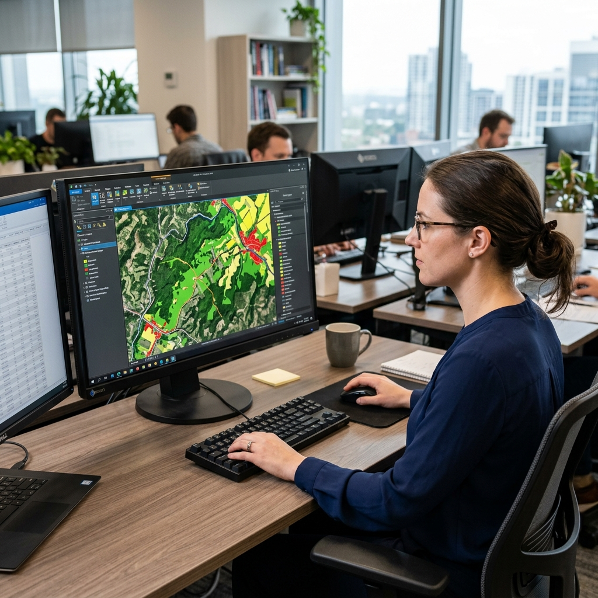
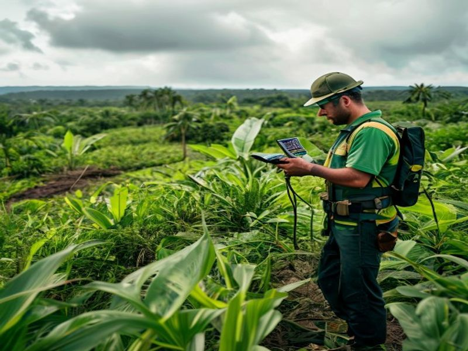
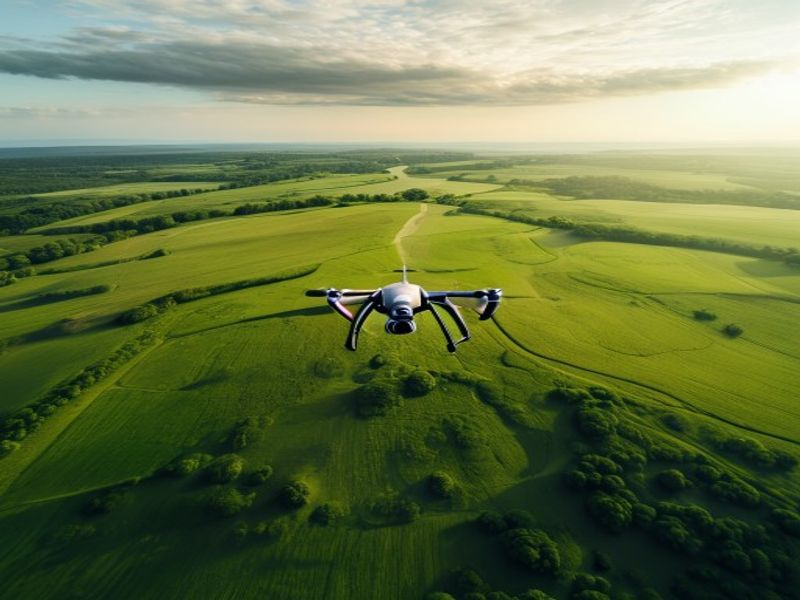
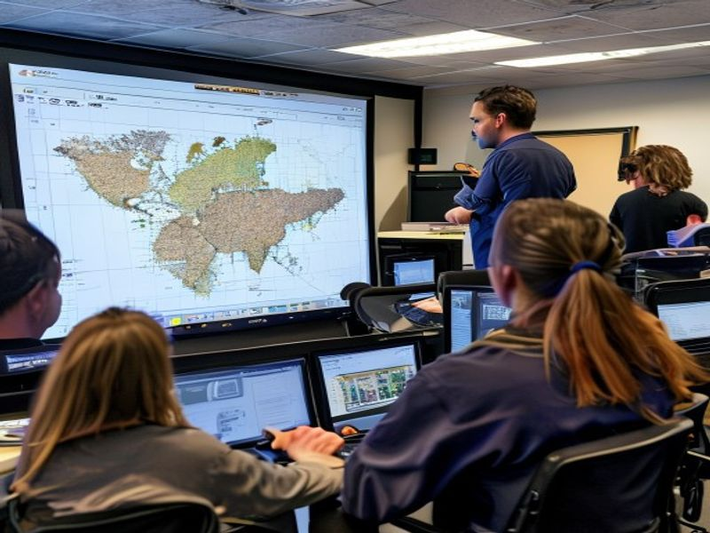

Advanced geospatial solutions tailored to solve complex environmental, academic, and urban planning challenges.
Leveraging remote sensing, GeoAI, and industry-standard GIS platforms, we produce high-quality spatial products for environmental monitoring, disaster planning, and land administration.

We support the academic and professional research community with rigorous spatial data processing, statistical analysis, and publication-ready cartographic outputs.
We provide end-to-end field data collection using GPS devices, mobile survey tools, and participatory approaches for projects that require ground truth verification.

Our certified drone pilots deliver ultra-high-resolution aerial data products for infrastructure surveys, agricultural assessments, and environmental monitoring.

We run hands-on workshops and training programmes to equip teams, students, and professionals with practical GIS and remote sensing skills.
